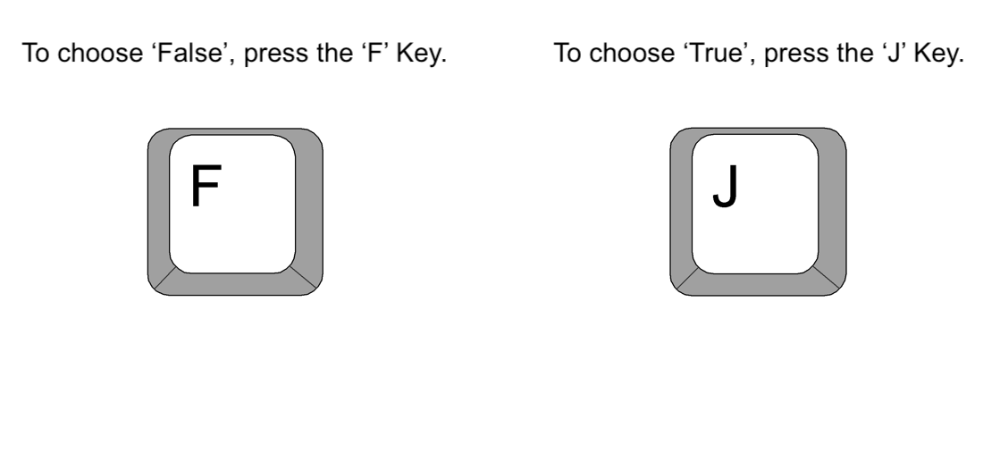

<!DOCTYPE html>
<html>

<head>
  <title>Study 2</title>
  <script src="https://unpkg.com/jspsych@7.3.3"></script>
  <script src="https://unpkg.com/@jspsych/plugin-html-keyboard-response@1.1.2"></script>
  <link href="https://unpkg.com/jspsych@7.3.3/css/jspsych.css" rel="stylesheet" type="text/css" />
  <script src="plugin-html-slider-response.js"></script>
  <script src="https://unpkg.com/@jspsych/plugin-instructions@1.1.3"></script>
  <script src="https://unpkg.com/@jspsych/plugin-survey-likert@1.1.3"></script>
  <script src="https://unpkg.com/@jspsych/plugin-preload@1.1.2"></script>
  <script src="https://unpkg.com/@jspsych/plugin-html-button-response@1.1.3"></script>
  <script src="stimuli5.js"></script>
  <style>
    .jspsych-display-element {
      font-size: 23px;
    }

    p {
      margin-bottom: 20px;
    }

    .stimulus-container {
      width: 1000px;
    }

    .headline-text {
      margin-left: 20px;
    }

    .headline-image {
      width: 40%;
      height: 40%;
      margin-top: 60px;
    }

    h2 {
      font-weight: bold;
    }

    .consent {
      width: 60%;
      margin: 0 auto;
      padding: 20px;
      box-shadow: 0 0 10px rgba(0, 0, 0, 0.1);
      font-size: 1em;
      text-align: left;
      font-family: "Helvetica Neue", Helvetica, Arial, sans-serif;
    }

    a {
      color: blue;
      /* Make links blue */
      text-decoration: underline;
      /* Underline links for visibility */
      font-family: "Helvetica Neue", Helvetica, Arial, sans-serif;
    }

    .right-aligned-text {
      text-align: right;
      margin-right: 80px;
      /* Adjust if necessary to remove default margin */
    }
  </style>
</head>

<body></body>
<script>
  /* initialize jsPsych */
  var jsPsych = initJsPsych();

  /* create timeline */
  var timeline = [];

  /* preload images for instrucions */
  var preload = {
    type: jsPsychPreload,
    images: [
      "instructions-keys.png",
      "instructions-buttons.png",
      "CNN.png",
      "Fox.png",
      "NBC.png",
      "ABC.png",
      "CBS.png",
      "MSNBC.png",
      "NYT.png"
    ]
  };

  var check_consent = false

  var consent = {
    type: jsPsychHtmlButtonResponse,
    stimulus: `<div class="consent"
      <h2>Welcome! Please read the following consent form carefully.</h2>
      <p>
        In this scientific study we are interested in how people process and
        evaluate new information. We will begin by asking you to what extent you
        agree with statements concerning 5 different topics.
        After that, you will be asked to indicate whether you think various news
        headlines are true or false. Finally, we will ask you about your political preferences,
        and debrief you on the experiment. In total, this task will take approximately
        15 minutes to complete. In return for your participation, you will
        receive a financial compensation of $2.75 (following the policy on
        participant payment by Prolific).
      </p>
      <p>
        This study is conducted by researchers at the Behavioral Science
        Institute (BSI) at Radboud University (Nijmegen, The Netherlands). The
        study has been reviewed independently by the Ethics Committee Social
        Sciences (ECSS) of the Radboud University and there is no formal
        objection to this study. Your participation in this study is entirely
        voluntary. If you decide not to participate, there will be no
        consequences. If, during the course of the research, you wish to
        withdraw your consent and terminate your participation, you have every
        right to do so at all times. Again, there will be no adverse
        consequences for you.
      </p>
      <p>
        In the following section, you will read how we handle your data and
        ensure your privacy. If you agree, you can provide consent and proceed
        to the study.
      </p>

      <h2>Privacy</h2>
      <p>
        For the current research it is necessary to collect, use, and store some
        personal data concerning your demographics to answer our scientific
        research question. This demographic data includes the following, and is
        provided to us by Prolific:
      </p>
      <ul>
        <li>Age</li>
        <li>Sex</li>
        <li>First language</li>
        <li>Current country of residence</li>
        <li>Nationality</li>
        <li>Country of birth</li>
        <li>Student status</li>
        <li>Employment status</li>
      </ul>
      <p>
        For this experiment, it is also necessary to collect specific personal
        data, namely your political preferences. We will collect this data by
        asking you to what extent you affiliate with either the Democratic or
        Republican party.
      </p>
      <p>
        Also, in order to be able to pay you, it is necessary to collect your
        ProlificID.
      </p>
      <p>
        In the consent form, you are asked to give explicit permission for the
        collection, use, and storage of the above-mentioned (specific) personal
        data. Without this permission, you cannot participate in the study.
      </p>
      <p>
        The information you provide for the current research purposes is treated
        with the utmost care and is accessible to authorized staff only. Your
        anonymized research data will be stored for at least 10 years after the
        research has been completed.
      </p>

      <h2>Sharing research data</h2>
      <p>
        Due to the importance of control, reuse and/or replication of research
        results, research data (including any anonymous personal data) are
        increasingly shared with or made available to other researchers. Your
        data will be anonymized prior to this form of sharing. This means that
        you can no longer be identified on the basis of these data. If you do
        not want your anonymized data to be shared, you can request to have your
        data deleted up to a maximum of 1 month after completion of the
        research.
      </p>
      <p>
        Some persons and organizations must have access to your personal and
        research data. This is necessary to test whether the research has been
        carried out properly and reliably. These persons and supervisory
        authorities inspecting your data for verification include: authorized
        persons within the Behavioral Science Institute or Radboud University
        (for example a dean, director or data officer) and (inter) national
        supervisory authorities (for example the Dutch Data Protection Authority
        and the Netherlands Board on Research Integrity). They are held to
        inspecting your data on a strictly confidential basis. You will be asked
        to grant permission for this access. Without this permission, you cannot
        participate in the study.
      </p>
      <h2>Additional information</h2>
      <p>
        Radboud University is responsible for compliance with the General Data
        Protection Regulation (GDPR) when processing your personal data. The
        researcher ensures that your privacy and the conditions attached to it
        are safeguarded and he/she adheres to the Dutch code of conduct for
        scientific integrity and university policy regarding the storage and
        management of personal and research data when conducting this research.
        You have the right to withdraw your consent for the processing of your
        personal data at any time. Your personal data will then be deleted. You
        can find the Radboud University Privacy Statement at:
        https://www.ru.nl/english/vaste-onderdelen/privacy-statement-radboud-university/.
        If you have any questions about your privacy, please contact the Local
        Privacy Officer Faculty of Social Sciences (enna.lujinovic@ru.nl). For
        general questions, please contact the office of the Data Protection
        Officer of Radboud University via privacy@ru.nl. More information about
        your rights in the processing of your personal data can be found at
        https://www.ru.nl/privacy/english/protection-personal-data/data-subjects-rights/
        and on the website of the Dutch Data Protection Authority
        (https://autoriteitpersoonsgegevens.nl/en).
      </p>
      <p>
        If you have any questions, comments, or concerns about this study,
        please contact Hugo Snijders (Hugo.Snijders@ru.nl)
      </p>
      <p>By consenting to participate in this study, you indicate that:</p>
      <ul>
        <li>You have been satisfactorily informed about the study.</li>
        <li>You have read the information stated above.</li>
        <li>You agree with the information stated above.</li>
        <li>
          You have been given the opportunity to think about participating in
          this study.
        </li>
        <li>You voluntarily agree to participate.</li>
        <li>
          You agree with the collection of the personal data outlined in the
          "Privacy" section of this form.
        </li>
        <li>You are at least 18 years of age.</li>
      </ul>
      <p>
        If you DO NOT consent to participate, please close this window and
        return your submission on Prolific by selecting the 'Stop without
        completing' button.
      </p>
      <p>
        If you do consent to participate in this study, please check the box
        below:
      </p>
      <p>
        <input type="checkbox" id="consent_checkbox" />
        I consent to take part in this study.
      </p>
      <p>
        Whenever you're ready, click the 'Begin study' below button to
        proceed.
      </p>
    </div>`,
    choices: ['I do not consent', 'Begin study'],
    on_load: function () {
      document.getElementById("consent_checkbox").addEventListener("change", function () {
        if (this.checked) {
          check_consent = true
          // Perform action when checked
        } else {
          check_consent = false
          // Perform action when unchecked
        }
      });
    }
  };

  var check_consent_procedure = {
    timeline: [consent],
    loop_function: function (data) {
      if (data.values()[0].response === 1 && !check_consent) {
        alert("Please check the box to consent before starting the experiment."); // Provide immediate feedback
        return true; // continue looping
      } else {
        return false; // exit loop
      }
    }
  };
  timeline.push(check_consent_procedure);

  var no_consent = {
    type: jsPsychHtmlButtonResponse,
    stimulus: `<div class="consent">
        <p>
            You have indicated that you do not consent to participate in this study. You can now close this window
            and return your submission on Prolific by selecting the 'Cancel participation' button. <br>
        </p>
    </div>`,
    choices: ['End experiment'],
    on_finish: function (data) {
      jsPsych.endExperiment()
    }
  }

  /* define welcome message trial */
  var welcome = {
    type: jsPsychHtmlKeyboardResponse,
    stimulus: "Welcome to the experiment. Press any key to begin.",
  };
  //timeline.push(welcome);


  var if_node_noConsent = {
    timeline: [no_consent],
    conditional_function: function () {
      if (jsPsych.data.get().last(1).values()[0].response == 0) {
        return true
      } else {
        return false
      }
    }
  }
  timeline.push(if_node_noConsent)

  var if_node_consent = {
    timeline: [welcome],
    conditional_function: function () {
      if (jsPsych.data.get().last(1).values()[0].response == 1 && check_consent) {
        return true
      } else {
        return false
      }
    }
  }
  timeline.push(if_node_consent)

  /* var if_node_noCheck = {
    timeline: [no_check, consent, if_node_consent, if_node_noConsent],
    conditional_function: function () {
      if (jsPsych.data.get().last(1).values()[0].response == 1 && check_consent == false) {
        return true
      } else {
        return false
      }
    }
  }
  timeline.push(if_node_noCheck) */

  /* Prior belief measurement */
  var prior_instructions = {
    type: jsPsychInstructions,
    pages: [
      `<div style="width:750px;">
        <p>You will first be shown five statements. For each statement you will be asked to indicate to what extent you agree or disagree with that statement.</p>
        </div>`],
    show_clickable_nav: true,
  };
  timeline.push(prior_instructions);

  var priors = []

  var prior1 = {
    type: jsPsychHtmlSliderResponse,
    stimulus: `<div style="width:500px;">
        <p>Human activity causes climate change</p>
        </div>`,
    min: -100,
    max: 100,
    slider_start: 0,
    slider_number: true,
    require_movement: true,
    labels: ["100% Disagree", " ", "100% Agree"],
    on_finish: function () {
      priors.push(jsPsych.data.get().last().values()[0].response)
    }
  };
  timeline.push(prior1);


  var prior2 = {
    type: jsPsychHtmlSliderResponse,
    stimulus: `<div style="width:500px;">
        <p>It is safe to get vaccinated against Covid-19</p>
        </div>`,
    min: -100,
    max: 100,
    slider_start: 0,
    slider_number: true,
    require_movement: true,
    labels: ["100% Disagree", " ", "100% Agree"],
    on_finish: function () {
      priors.push(jsPsych.data.get().last().values()[0].response)
    }
  };
  timeline.push(prior2);

  var prior3 = {
    type: jsPsychHtmlSliderResponse,
    stimulus: `<div style="width:500px;">
        <p> GMO foods (i.e. foods that are genetically modified) are harmful to human health</p>
        </div>`,
    min: -100,
    max: 100,
    slider_start: 0,
    slider_number: true,
    require_movement: true,
    labels: ["100% Disagree", " ", "100% Agree"],
    on_finish: function () {
      priors.push(jsPsych.data.get().last().values()[0].response)
    }
  };
  timeline.push(prior3);

  var prior4 = {
    type: jsPsychHtmlSliderResponse,
    stimulus: `<div style="width:500px;">
        <p>Radiation from 5G technology is harmful to humans</p>
        </div>`,
    min: -100,
    max: 100,
    slider_start: 0,
    slider_number: true,
    require_movement: true,
    labels: ["100% Disagree", " ", "100% Agree"],
    on_finish: function () {
      priors.push(jsPsych.data.get().last().values()[0].response)
    }
  };
  timeline.push(prior4);

  var prior5 = {
    type: jsPsychHtmlSliderResponse,
    stimulus: `<div style="width:500px;">
        <p>Widespread voter fraud took place during the US 2020 presidential election</p>
        </div>`,
    min: -100,
    max: 100,
    slider_start: 0,
    slider_number: true,
    require_movement: true,
    labels: ["100% Disagree", " ", "100% Agree"],
    on_finish: function () {
      priors.push(jsPsych.data.get().last().values()[0].response)
    }
  };
  timeline.push(prior5);

  var source_cred = []

  var sources = ['NYT']

  /* Source credibility measurement */
  var source_instructions = {
    type: jsPsychInstructions,
    pages: [
      `<div style="width:750px;">
        <p>Thank you. You will now be shown a series of news sources, and we ask that you indicate for each source how much you trust it.</p>
        </div>`],
    show_clickable_nav: true,
  };
  timeline.push(source_instructions);

  var source1 = {
    type: jsPsychHtmlSliderResponse,
    stimulus: `<div style="width:500px;">
        <p>CNN</p>
        </div>`,
    min: -100,
    max: 100,
    slider_start: 0,
    slider_number: true,
    require_movement: true,
    labels: ["100% Distrust", " ", "100% Trust"],
    on_finish: function () {
      source_cred.push(jsPsych.data.get().last().values()[0].response)
    }
  };
  timeline.push(source1);

  var source2 = {
    type: jsPsychHtmlSliderResponse,
    stimulus: `<div style="width:500px;">
        <p>Fox News</p>
        </div>`,
    min: -100,
    max: 100,
    slider_start: 0,
    slider_number: true,
    require_movement: true,
    labels: ["100% Distrust", " ", "100% Trust"],
    on_finish: function () {
      source_cred.push(jsPsych.data.get().last().values()[0].response)
    }
  };
  timeline.push(source2);

  var source3 = {
    type: jsPsychHtmlSliderResponse,
    stimulus: `<div style="width:500px;">
        <p>NBC news</p>
        </div>`,
    min: -100,
    max: 100,
    slider_start: 0,
    slider_number: true,
    require_movement: true,
    labels: ["100% Distrust", " ", "100% Trust"],
    on_finish: function () {
      source_cred.push(jsPsych.data.get().last().values()[0].response)
    }
  };
  timeline.push(source3);

  var source4 = {
    type: jsPsychHtmlSliderResponse,
    stimulus: `<div style="width:500px;">
        <p>ABC news</p>
        </div>`,
    min: -100,
    max: 100,
    slider_start: 0,
    slider_number: true,
    require_movement: true,
    labels: ["100% Distrust", " ", "100% Trust"],
    on_finish: function () {
      source_cred.push(jsPsych.data.get().last().values()[0].response)
    }
  };
  timeline.push(source4);

  var source5 = {
    type: jsPsychHtmlSliderResponse,
    stimulus: `<div style="width:500px;">
        <p>CBS news</p>
        </div>`,
    min: -100,
    max: 100,
    slider_start: 0,
    slider_number: true,
    require_movement: true,
    labels: ["100% Distrust", " ", "100% Trust"],
    on_finish: function () {
      source_cred.push(jsPsych.data.get().last().values()[0].response)
    }
  };
  timeline.push(source5);

  var source6 = {
    type: jsPsychHtmlSliderResponse,
    stimulus: `<div style="width:500px;">
        <p>MSNBC</p>
        </div>`,
    min: -100,
    max: 100,
    slider_start: 0,
    slider_number: true,
    require_movement: true,
    labels: ["100% Distrust", " ", "100% Trust"],
    on_finish: function () {
      source_cred.push(jsPsych.data.get().last().values()[0].response)
    }
  };
  timeline.push(source6);

  var source7 = {
    type: jsPsychHtmlSliderResponse,
    stimulus: `<div style="width:500px;">
        <p>New York Times</p>
        </div>`,
    min: -100,
    max: 100,
    slider_start: 0,
    slider_number: true,
    require_movement: true,
    labels: ["100% Distrust", " ", "100% Trust"],
    on_finish: function () {
      source_cred.push(jsPsych.data.get().last().values()[0].response)
    }
  };
  timeline.push(source7);

  function get_source_cred(obj) {
    var values = Object.values(obj);
    var sorted_values = [...values].sort((a, b) => a - b);
    var median = (sorted_values[Math.floor((sorted_values.length - 1) / 2)] + sorted_values[Math.ceil((sorted_values.length - 1) / 2)]) / 2;

    return Object.keys(obj).reduce((result, key) => {
      // Highest and lowest logic (same as before)
      if (!result.highest.value || obj[key] > result.highest.value) {
        result.highest = { value: obj[key], keys: [key] };
      } else if (obj[key] === result.highest.value) {
        result.highest.keys.push(key);
      }

      if (!result.lowest.value || obj[key] < result.lowest.value) {
        result.lowest = { value: obj[key], keys: [key] };
      } else if (obj[key] === result.lowest.value) {
        result.lowest.keys.push(key);
      }

      // Middle logic
      if (!result.middle.value1 || Math.abs(obj[key] - median) < Math.abs(result.middle.value1 - median)) {
        result.middle.value2 = result.middle.value1;
        result.middle.keys2 = result.middle.keys1;
        result.middle.value1 = obj[key];
        result.middle.keys1 = [key];
      } else if (obj[key] === result.middle.value1) {
        result.middle.keys1.push(key);
      } else if (!result.middle.value2 || Math.abs(obj[key] - median) < Math.abs(result.middle.value2 - median)) {
        result.middle.value2 = obj[key];
        result.middle.keys2 = [key];
      } else if (obj[key] === result.middle.value2) {
        result.middle.keys2.push(key);
      }

      return result;
    }, {
      highest: { value: null, keys: [] },
      lowest: { value: null, keys: [] },
      middle: { value1: null, keys1: [], value2: null, keys2: [] }
    });
  }


  /* //This function determines the highest and lowest perceived credibility values and assigns them to a dictionary 
  function getKeysWithExtremeValues(obj) {
    return Object.keys(obj).reduce((result, key) => {
      if (!result.highest.value || obj[key] > result.highest.value) {
        result.highest = { value: obj[key], keys: [key] };
      } else if (obj[key] === result.highest.value) {
        result.highest.keys.push(key);
      }

      if (!result.lowest.value || obj[key] < result.lowest.value) {
        result.lowest = { value: obj[key], keys: [key] };
      } else if (obj[key] === result.lowest.value) {
        result.lowest.keys.push(key);
      }

      if (!result.middle.value1 || Math.abs(obj[key] - median) < Math.abs(result.middle.value1 - median)) {
      result.middle.value2 = result.middle.value1;
      result.middle.keys2 = result.middle.keys1;
      result.middle.value1 = obj[key];
      result.middle.keys1 = [key];
    } else if (obj[key] === result.middle.value1) {
      result.middle.keys1.push(key);
    } else if (!result.middle.value2 || Math.abs(obj[key] - median) < Math.abs(result.middle.value2 - median)) {
      result.middle.value2 = obj[key];
      result.middle.keys2 = [key];
    } else if (obj[key] === result.middle.value2) {
      result.middle.keys2.push(key);
    }

      return result;
    }, { highest: { value: null, keys: [] }, lowest: { value: null, keys: [] } });
  } */

  var source_cred_dict, extremes_cred_sources = {}

  /* First block of instructions */
  var instructions_1 = {
    type: jsPsychInstructions,
    pages: [
      `<p>Thank you. We will now provide you with instructions for the experimental task.</p>`,
      `<p>You will be shown a series of news headlines, and we will ask you <br> to indicate whether you think the content of each headline is <b>true</b> or <b>false.</b>
        <br> <br> This is not a test with right or wrong answers. We just want to know what <i>you</i> think <br> about each headline. </p>`,
      `</img>`,
      `<p>Note: for each choice you will have 8 seconds to make your decision. <br> <br> We recommend you keep your index fingers on the 'f' and 'j' keys.</p>`,
      `<p>We will first have you do two practice trials to help familiarize <br> you with how the experiment works. <br> <br> Press 'Next' to continue.</p>`,
    ],
    show_clickable_nav: true,
    on_start: function () {
      source_cred_dict = {
        "CNN": source_cred[0],
        "Fox": source_cred[1],
        "NBC": source_cred[2],
        "ABC": source_cred[3],
        "CBS": source_cred[4],
        "MSNBC": source_cred[5],
        "NYT": source_cred[6]
      }

      extremes_cred_sources = get_source_cred(source_cred_dict);
    }
  };
  timeline.push(instructions_1);


  var source_image_dict = {
    "CNN": "CNN.png",
    "Fox": "Fox.png",
    "NBC": "NBC.png",
    "ABC": "ABC.png",
    "CBS": "CBS.png",
    "MSNBC": "MSNBC.png",
    "NYT": "NYT.png"
  }

  /* Create blank screen to place after each trial */
  var blank = {
    type: jsPsychHtmlKeyboardResponse,
    stimulus: '<div style="font-size:60px;"> </div>',
    choices: "NO_KEYS",
    trial_duration: 800,
    data: {
      task: "blank",
    },
  };

  /* Create fixation crosses */
  var fixation = {
    type: jsPsychHtmlKeyboardResponse,
    stimulus: '<div style="font-size:60px; position: relative; bottom: 100px;">+</div>',
    choices: "NO_KEYS",
    trial_duration: 1000,
    data: {
      task: "fixation",
    },
  };

  /* Create practice trial stimuli */
  var practice_stimuli = [
    {
      text: "1 cup of coffee a day shown to increase risk of cardiovascular disease",
      source_function: function () {
        return extremes_cred_sources.middle.keys1[0]
      },
      info: false
    },
    {
      text: "Kansas City beats San Fransisco in overtime at the 2024 Super Bowl",
      source_function: function () {
        return extremes_cred_sources.middle.keys2[0]
      },
      info: true
    },
  ]

  var practice_stimuli_randomized = jsPsych.randomization.repeat(practice_stimuli, 1); // Make sure the order in which these are shown is randomized

  timeline.push(fixation);

  /* For loop to add practice trials to timeline */
  for (let i = 0; i < practice_stimuli.length; i++) {
    var practice_trial = {
      type: jsPsychHtmlKeyboardResponse,
      stimulus: function () {
        return `<div class="stimulus-container">
        <p class="headline-text">${practice_stimuli_randomized[i].text}</p>
        <p style="text-align: right; margin-right: 120px;">
          ${practice_stimuli_randomized[i].source_function()}
        </p>
        
      </div>`;
      },
      choices: ["f", "j"],
      trial_duration: 8000,
      data: {
        text: practice_stimuli_randomized[i].text,
        info: practice_stimuli_randomized[i].info,
      },
    }
    timeline.push(practice_trial);
    timeline.push(blank);
  }

  /* Create a randomply sampled array of headlines to loop through */
  var headlines = jsPsych.randomization.sampleWithoutReplacement(
    headline_stimuli,
    headline_stimuli.length
  );

  /* This function will later be used to set the congruence of a
   headline depending on the prior for the topic at hand */
  function congruence_function(topic_nr, info, flip) {
    // Determine prior based on topic number
    prior = priors[topic_nr]
    // the separation based on 'flip' is to account for the way the measurement questions are formulated
    if (flip == false) {
      if ((prior > 0 && info == true) || (prior < 0 && info == false)) {
        return "Congruent";
      } else if (prior == 0) {
        return "Neutral";
      } else {
        return "Incongruent";
      }
    } else {
      if ((prior > 0 && info == true) || (prior < 0 && info == false)) {
        return "Incongruent";
      } else if (prior == 0) {
        return "Neutral";
      } else {
        return "Congruent";
      }
    }
  }

  /* Final block of instructions */
  var instructions_2 = {
    type: jsPsychInstructions,
    pages: [
      `<p>Thank you. We can now begin the experiment.</p>`,
      `<p>Whenever you're ready to start the experiment, press 'Next'.</p>`,
    ],
    show_clickable_nav: true,
    on_start: function (data) {
      for (let i = 0; i < headlines.length; i++) {
        info = headlines[i].info;
        flip = headlines[i].flipped;
        if (headlines[i].topic == "Climate Change") {
          headlines[i].congruence = congruence_function(0, info, flip);
        } else if (headlines[i].topic == "Vaccination") {
          headlines[i].congruence = congruence_function(1, info, flip);
        } else if (headlines[i].topic == "GMO") {
          headlines[i].congruence = congruence_function(2, info, flip);
        } else if (headlines[i].topic == "5G") {
          headlines[i].congruence = congruence_function(3, info, flip);
        } else {
          headlines[i].congruence = congruence_function(4, info, flip);
        }
      }

      headline_fillers.forEach(obj => {
        obj.congruence = "filler";
      });

      headlines.push(...headline_fillers)

      headlines = jsPsych.randomization.repeat(headlines, 1);
    },
    on_finish: function () {
      /* This function makes sure that source assignments are randomized and counterbalanced across
      topics and congruence conditions */
      let topics = ["Climate Change", "Vaccination", "GMO", "5G", "Voter Fraud"];
      let source_counts = {};
      topics.forEach(topic => {
        source_counts[topic] = {
          congruent: { high: 0, low: 0 },
          incongruent: { high: 0, low: 0 }
        }; // this is to keep count of how many high and low credibility sources were assigned accross topics and conditions
      });

      let middle_sources = [...extremes_cred_sources.middle.keys1, ...extremes_cred_sources.middle.keys2]; // Combine middle sources into array
      let middle_source_index = 0;

      for (let i = 0; i < headlines.length; i++) {
        let headline = headlines[i];
        // This is specifically to assign the two middle sources to filler trials
        if (headline.congruence === "filler") {
          let source_name = middle_sources[middle_source_index % middle_sources.length]; // the modulo operation is to cycle through filler sources evenly
          let credibility_value;
          if (middle_source_index < extremes_cred_sources.middle.keys1.length) {
            credibility_value = extremes_cred_sources.middle.value1;
          } else {
            credibility_value = extremes_cred_sources.middle.value2;
          } // this is to make sure the right credibility value gets assigned to the source that's being used
          headline.source = {
            name: source_name,
            credibility: "middle",
            credibility_value: credibility_value
          };
          middle_source_index++;
          // This is where sources get assigned to real trials
        } else {
          let topic_counts = source_counts[headline.topic];
          let congruence = headline.congruence ? "congruent" : "incongruent";
          let credibility = topic_counts[congruence].high <= topic_counts[congruence].low ? "highest" : "lowest"; // This is basically an if-then function that checks whether there are fewer or an equal number of high credibility sources compared to low
          topic_counts[congruence][credibility === "highest" ? "high" : "low"]++; // this adds to add to the relevant counter for topic/congruence

          let available_sources = extremes_cred_sources[credibility].keys;
          let source_name = available_sources[Math.floor(Math.random() * available_sources.length)];
          headline.source = {
            name: source_name,
            credibility: credibility,
            credibility_value: extremes_cred_sources[credibility].value
          };
        }
      }
    }
  };
  timeline.push(instructions_2);

  timeline.push(fixation);

  /* For loop to add stimuli to timeline by going through headline_stimuli */
  for (let i = 0; i < 100; i++) {
    var headline_trial = {
      type: jsPsychHtmlKeyboardResponse,
      stimulus: function () {
        return `<div class="stimulus-container">` +
          `<p class="headline-text">` +
          headlines[i].text +
          `</p>` +
          `` +
          `</div>`
      },
      choices: ["f", "j"],
      trial_duration: 8000,
      data: function () {
        return {
          topic: headlines[i].topic,
          code: headlines[i].code,
          info: headlines[i].info,
          length: headlines[i].length,
          trial: i + 1, // check to make sure this works
        }
      },
      on_start: function (data) {
      }
      /* The following function retrieves the participant's prior depending on the topic,
      and compares that to the truth of the stimulus to determine its congruence for the participant */
    };
    timeline.push(headline_trial);
    timeline.push(blank);
  }

  /* Final block of instructions */
  var instructions_3 = {
    type: jsPsychInstructions,
    pages: [
      `<div style="width:800px;">
      <p>Thank you for completing the experimental task. We will now ask you one final survey question regarding your
        political preferences, and after that you will be debriefed and provided with a Prolific completion code.</p>
        </div>`,
    ],
    show_clickable_nav: true,
  };
  timeline.push(instructions_3);

  var pol_aff = {
    type: jsPsychSurveyLikert,
    questions: [
      {
        prompt:
          "Which of the following best describes your political affiliation?",
        labels: [
          "Strongly Republican",
          "Moderately Republican",
          "Neutral",
          "Moderately Democrat",
          "Strongly Democrat",
        ],
      },
    ],
  };
  timeline.push(pol_aff);

  var debrief = {
    type: jsPsychHtmlButtonResponse,
    stimulus: `<div class="consent"
    <h2>Debrief</h2>
      <p>
        Thank you for participating in this study. The aim of this study is to
        better understand how people's prior beliefs (and the certainty with
        which they hold those beliefs) influence their likelihood of believing
        in headlines that either contradict or conform to those prior beliefs,
        and the extent to which they deliberate when assessing those headlines.
      </p>
      <p>
        NOTE: <br />
        As part of this experiment you will have seen several headlines that
        were not factual (these headlines were created with generative AI and
        were not based on any factual evidence). Below we will list which groups
        of headlines are fake (printed in <b>bold</b>), and we will also give an
        explanation of why the best available evidence contradicts the content
        of those headlines:
      </p>
      <p>
        <b
          >Headlines that suggest anthropogenic climate change is not
          occurring:</b
        >
      </p>
      <p>
        Explanation: the current scientific consensus is that there is clear
        evidence that the earth's climate is warming, and that this is due to
        human activity. A recent study showed that this consensus in the
        peer-reviewed scientific literature is greater than 99% (<a target='_blank'
          href="https://iopscience.iop.org/article/10.1088/1748-9326/ac2966"
          >https://iopscience.iop.org/article/10.1088/1748-9326/ac2966</a
        >)
      </p>
      <p>
        NASA also provides a helpful overview of key facts, while also listing
        many American scientific organizations and their respective stances on
        the issue of climate change: (<a target='_blank'
          href="https://climate.nasa.gov/scientific-consensus/"
          >https://climate.nasa.gov/scientific-consensus/</a
        >)
      </p>
      <p>
        You can also find the website of the Intergovernmental Panel on Climate
        Change (IPCC) here, which includes many options for further reading on
        scientific evidence for anthropogenic climate change: (<a target='_blank'
          href="https://www.ipcc.ch/"
          >https://www.ipcc.ch/</a
        >)
      </p>
      <p>
        <b
          >Headlines that suggest it is unsafe to be vaccinated against
          COVID-19</b
        >
      </p>
      <p>
        Explanation: COVID-19 vaccinations are safe and effective. The safety of
        COVID-19 vaccines has been rigorously tested, monitored, and evaluated
        since their emergency use authorization. COVID-19 vaccination continues
        to be the best way to protect against serious illness, and the benefits
        of vaccination outweigh the known and potential risks associated with
        rare side effects.
      </p>
      <p>
        For more information about the safety and efficacy of COVID-19
        vaccination, the Center for Disease Control and Prevention provides a
        helpful overview here:
        <a target='_blank'
          href="https://www.cdc.gov/coronavirus/2019-ncov/vaccines/safety/safety-of-vaccines.html"
          >https://www.cdc.gov/coronavirus/2019-ncov/vaccines/safety/safety-of-vaccines.html</a
        >
      </p>
      <p>
        And for more information, there is also the following resource by the
        World Health Organization:
        <a target='_blank'
          href="https://www.who.int/emergencies/diseases/novel-coronavirus-2019/covid-19-vaccines/advice"
          >https://www.who.int/emergencies/diseases/novel-coronavirus-2019/covid-19-vaccines/advice</a
        >
      </p>
      <p>
        <b>Headlines that suggest GMO foods are unsafe for human consumption</b>
      </p>
      <p>
        Explanation: research and studies conducted over the years have shown
        that, based on the GMO foods that are currently available on the market,
        there is no evidence that GMO foods are less safe to eat than non-GMO
        foods. For a detailed overview of what GMO foods are how they are
        regulated, see the following page by the World Health Organization:
        <a target='_blank'
          href="https://www.who.int/news-room/questions-and-answers/item/food-genetically-modified"
          >https://www.who.int/news-room/questions-and-answers/item/food-genetically-modified</a
        >
      </p>
      <p>
        The US Food and Drug Administration (FDA) also provides a clear overview
        of how the safety of GMO foods is assessed and monitored in the US here:
        <a target='_blank'
          href="https://www.fda.gov/food/agricultural-biotechnology/how-gmos-are-regulated-united-states"
          >https://www.fda.gov/food/agricultural-biotechnology/how-gmos-are-regulated-united-states</a
        >
      </p>
      <p>
        <b
          >Headlines that suggest there is evidence that 5G radiation is harmful
          to human health</b
        >
      </p>
      <p>
        Explanation: the current scientific consensus regarding 5G is that no
        credible evidence has been found that causally links it to any adverse
        health outcomes. Provided that overall exposure remains below
        international exposure guidelines set by the International Commission on
        Non-Iodizing Radiation Protection (ICNIRP), there is no reason to
        anticipate any negative outcomes for public health.
      </p>
      <p>
        The World Health Organization provides more information about 5G
        specifically here:
        <a target='_blank'
          href="https://www.who.int/news-room/questions-and-answers/item/radiation-5g-mobile-networks-and-health"
          >https://www.who.int/news-room/questions-and-answers/item/radiation-5g-mobile-networks-and-health</a
        >
      </p>
      <p>
        And you can learn more about the health effects of electromagnetic
        fields more generally here:
        <a target='_blank'
          href="https://www.who.int/news-room/questions-and-answers/item/radiation-electromagnetic-fields"
          >https://www.who.int/news-room/questions-and-answers/item/radiation-electromagnetic-fields</a
        >
      </p>
      <p>
        You can also find the ICNIRP's assessment of 5G radiofrequency here:
        <a  target='_blank' href="https://www.icnirp.org/en/applications/5g/index.html"
          >https://www.icnirp.org/en/applications/5g/index.html</a
        >
      </p>
      <p>
        <b
          >Headlines that suggest widespread voter fraud took place during the
          2020 US presidential election</b
        >
      </p>
      <p>
        Explanation: there is no credible evidence that widespread voter fraud
        took place during the 2020 election. Although there may have been a
        small number of cases (the Heritage foundation, a conservative think
        tank, reported 1,500 proven instances across the US - see here:
        <a target='_blank'href="https://www.heritage.org/voterfraud/#choose-a-state"
          >https://www.heritage.org/voterfraud/#choose-a-state</a
        >
        ), this is unlikely to make a difference for an election in which almost
        155 million votes were cast (<a target='_blank'
          href="https://www.census.gov/newsroom/press-releases/2022/2020-presidential-election-voting-report.html"
          >https://www.census.gov/newsroom/press-releases/2022/2020-presidential-election-voting-report.html</a
        >). For instance, the Associated Press (AP) conducted an exhaustive fact
        check of potential cases of voter fraud in six battleground states
        (Arizona, Georgia, Michigan, Nevada, Pennsylvania and Wisconsin) and
        found fewer than 475 instances of voter fraud (<a target='_blank'
          href="https://www.pbs.org/newshour/politics/ap-review-finds-far-too-little-vote-fraud-to-tip-2020-election-to-trump"
          >https://www.pbs.org/newshour/politics/ap-review-finds-far-too-little-vote-fraud-to-tip-2020-election-to-trump</a
        >). The disputed ballots represent just 0.15 percent of Biden's victory
        margin in those states.
      </p>
      <p>
        Moreover, a guide to statistical claims published in the Proceedings of
        the National Academy of Sciences, found no evidence for systematic voter
        fraud:
        <a target='_blank' href="https://www.pnas.org/doi/10.1073/pnas.2103619118"
          >https://www.pnas.org/doi/10.1073/pnas.2103619118</a
        >
      </p>
      <p>
        The courts have also dismissed more the 50 lawsuits of alleged voter
        fraud:
        <a target='_blank' href="https://www.reuters.com/article/idUSL2N2XJ0OQ/"
          >https://www.reuters.com/article/idUSL2N2XJ0OQ/</a
        >
      </p>
      <p>
        Finally, there are also many republicans that acknowledged the outcome
        of the 2020 election:
        <a target='_blank'
          href="https://www.forbes.com/sites/andrewsolender/2020/12/10/these-are-the-republicans-who-have-acknowledged-bidens-victory"
          >https://www.forbes.com/sites/andrewsolender/2020/12/10/these-are-the-republicans-who-have-acknowledged-bidens-victory</a
        >
      </p>
      <p>
        For fact-checking of a variety of other claims of voter fraud, see this
        list by PolitiFact:
        <a target='_blank'
          href="https://www.politifact.com/article/2020/nov/20/fact-checking-false-claims-about-2020-election/"
          >https://www.politifact.com/article/2020/nov/20/fact-checking-false-claims-about-2020-election/</a
        >
      </p>
    </div>`,
    choices: ['Next']
  };
  timeline.push(debrief);

  /* Completion code */
  var completion_code = {
    type: jsPsychHtmlKeyboardResponse,
    stimulus: `<div style="width:800px;">
            <p>Thank you for taking part in this experiment! You can click the link below to confirm your completion with Prolific:</p>
      <a target='_blank'
          href="https://app.prolific.com/submissions/complete?cc=C1F76V8S"
          >https://app.prolific.com/submissions/complete?cc=C1F76V8S</a
        ></div>`,
    choices: "NO_KEYS"
  };
  timeline.push(completion_code);

  /* start the experiment */
  jsPsych.run(timeline);
</script>

</html>